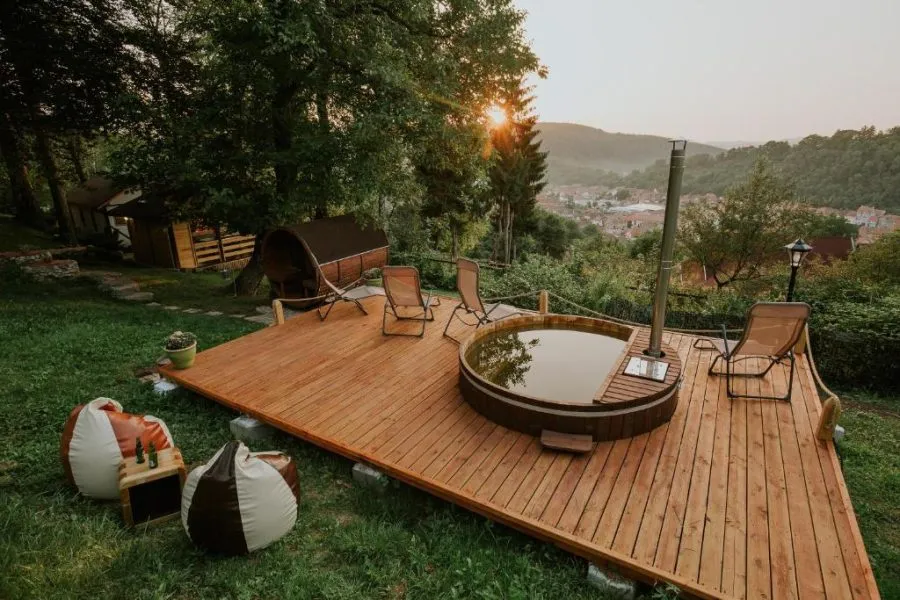
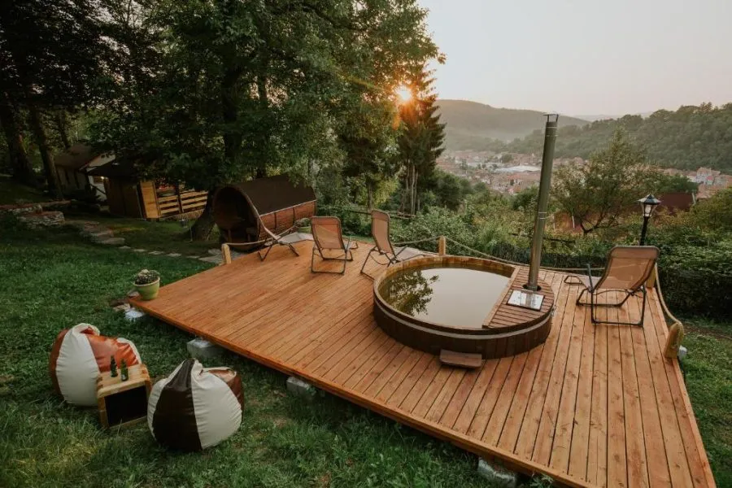

Restaurant
Restaurantul Medieval a fost creat din dorința de a vă oferi o experiență culinară demnă de case regale medievale, într-un mediu care ne poartă în timp într-o lume de poveste.

Terasă
Terasa Medieval - O oază de relaxare cu o priveliște montană superbă in inima Bucovinei

Cramă
Pentru orice tip de vizită sau eveniment rezervarea cu minim 24 h înainte este obligatorie, întrucât dorim să oferim fiecărui oaspete o experiență personalizată. Mulțumim pentru înțelegere!

Saună/Ciubăr
Spa-ul nostru Medieval, într-un mediu care ne poartă în timp într-o lume de poveste, oferă și beneficii considerabile pentru sănătate: deoarece vasele de sânge se relaxează și se dilată cât stai în saună, fluxul sangvin crește, iar experiența poate ajuta la reducerea tensiunii la nivelul articulațiilor și la ușurarea durerilor musculare. Sauna ar putea fi de ajutor pentru persoanele cu dureri cronice și cu artrită.
 
